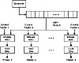

Click Here!


|
Click Here! |
|
| |
|
|
|
To access the contents, click the chapter and section titles.
Applied Cryptography, Second Edition: Protocols, Algorthms, and Source Code in C (cloth)
A clever trick is to use one algorithm, either a block or stream algorithm, to frequently rekey a fast stream algorithm (which could even be a block algorithm in OFB mode). The fast algorithm could be weak, since a cryptanalyst would never see very much plaintext encrypted with any one key. There’s a trade-off between the size of the fast algorithm’s internal state (which may impact security) and how often you can afford to rekey. The rekey needs to be relatively fast; algorithms that have a long key setup routine aren’t suitable for this kind of application. And the rekeying should be independent of the internal state of the fast algorithm. 17.12 Choosing a Stream CipherIf the study of stream ciphers offers any lessons, it’s that new types of attacks are invented with alarming regularity. Classically, stream ciphers have been based on considerable mathematical theory. This theory can be used to prove good properties about the cipher, but can also be used to find new attacks against the cipher. I worry about any stream cipher based solely on LFSRs for this reason. I prefer stream ciphers that are designed more along the lines of block ciphers: nonlinear transformations, large S-boxes, and so on. RC4 is my favorite, and SEAL is a close second. I would be very interested in seeing cryptanalytic results against my generators that combine LFSRs and FCSRs; this seems to be a very fruitful area of stream-cipher research to mine for actual designs. Or, you can use a block cipher in OFB or CFB to get a stream cipher. Table 17.3 gives some timing measurements for some algorithms. These are meant for comparison purposes only. 17.13 Generating Multiple Streams from a Single Pseudo-Random-Sequence GeneratorIf you need to encrypt multiple channels of communications in a single box—a multiplexer, for example—the easy solution is to use a different pseudo-random-sequence generator for each stream. This has two problems: It requires more hardware, and all the different generators have to be synchronized. It would be simpler to use a single generator.
One solution is to clock the generator multiple times. If you want three independent streams, clock the generator three times and send 1 bit into each stream. This technique works, but you may have trouble clocking the generator as fast as you would like. For example, if you can only clock the generator three times as fast as the data stream, you can only create three streams. Another way is to use the same sequence for each channel—perhaps with a variable time delay. This is insecure. A really clever idea [1489], patented by the NSA, is shown in Figure 17.11. Dump the output of your favorite generator into an m-bit simple shift register. At each clock pulse, shift the register one to the right. Then, for each output stream, AND the register with a different m-bit control vector viewed as a unique identifier for the desired output stream, then XOR all the bits together to get the output bit for that stream. If you want several output streams in parallel, you need a separate control vector and an XOR/AND logic array for each output stream. There are some things to watch out for. If any of the streams are linear combinations of other streams, then the system can be broken. But if you are clever, this is an easy and secure way to solve the problem. 17.14 Real Random-Sequence GeneratorsSometimes cryptographically secure pseudo-random numbers are not good enough. Many times in cryptography, you want real random numbers. Key generation is a prime example. It’s fine to generate random cryptographic keys based on a pseudo-random sequence generator, but if an adversary gets a copy of that generator and the master key, the adversary can create the same keys and break your cryptosystem, no matter how secure your algorithms are. A random-sequence generator’s sequences cannot be reproduced. No one, not even you, can reproduce the bit sequence out of those generators. 
There is a large philosophical debate over whether any of these techniques actually produces real random bits. I am not going to address that debate. The point here is to produce bits that have the same statistical properties as random bits and are not reproducible. The important thing about any real random-sequence generator is that it be tested. There is a wealth of literature on this topic. Tests of randomness can be found in [863,99]. Maurer showed that all these tests can be derived from trying to compress the sequence [1031,1032]. If you can compress a random sequence, then it is not truly random. Anyhow, what we have here is a whole lot of black magic. The primary point is to generate a sequence of bits that your adversary is unlikely to guess. It doesn’t sound like much, but it’s harder than you think. I can’t prove that any of these techniques generates random bits. These techniques produce a sequence of bits that cannot be easily reproduced. For some details, see [1375,1376,511]. RAND Tables Back in 1955, when computers were still new, the Rand Corporation published a book that contained a million random digits [1289]. Their method is described in the book:
|
|||||||||||||||||||||||||||
|
Products | Contact Us | About Us | Privacy | Ad Info | Home
Use of this site is subject to certain Terms & Conditions, Copyright © 1996-1999 EarthWeb Inc. All rights reserved. Reproduction whole or in part in any form or medium without express written permision of EarthWeb is prohibited.
|
){kind=link}
){kind=link}